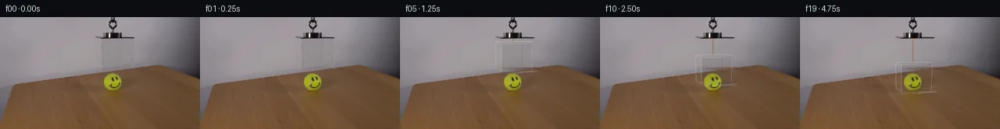

![首帧]()

Round 00
2026-11-05T02:00:42.664401+00:00像素候选变化代码 +241/−0inspection 更新
pixels 2d5722c1d464d08f · code ed7c74f7794664b5
查看本轮 generate.py 真实 diff
--- previous/generate.py
+++ current/generate.py
@@ -0,0 +1,241 @@
+#!/usr/bin/env python3
+"""Generate the PixelWorld continuation using deterministic local pixel operations."""
+
+from pathlib import Path
+
+import numpy as np
+from PIL import Image, ImageDraw, ImageFont
+
+from artifact_io import save
+
+
+ROOT = Path(__file__).resolve().parent
+W, H = 256, 144
+DESCENTS = np.array(
+ [0.0, 0.0, 0.3, 1.1, 2.5, 4.6, 7.3, 10.6, 14.2, 18.0,
+ 21.6, 24.8, 27.4, 29.3, 30.5, 31.0, 31.0, 31.0, 31.0, 31.0],
+ dtype=np.float32,
+)
+
+
+def make_clean_plate(source):
+ """Remove the original faint acrylic box with row-wise local interpolation."""
+ clean = source.astype(np.float32).copy()
+ # Only the transparent enclosure is removed. Its metal fixture ends at y=27.
+ x0, x1, y0, y1 = 118, 176, 28, 68
+ for y in range(y0, y1):
+ # Robust local endpoints preserve the wall's vertical lighting gradient.
+ left = np.median(source[y, 113:118].astype(np.float32), axis=0)
+ right = np.median(source[y, 176:181].astype(np.float32), axis=0)
+ u = np.linspace(0.0, 1.0, x1 - x0, dtype=np.float32)[:, None]
+ row = left[None, :] * (1.0 - u) + right[None, :] * u
+ # Retain a tiny deterministic texture component sampled just outside the box.
+ texture = source[y, 108:118].astype(np.float32)
+ texture = texture - texture.mean(axis=0, keepdims=True)
+ tiled = np.resize(texture, (x1 - x0, 3)) * 0.22
+ clean[y, x0:x1] = row + tiled
+ return np.clip(clean, 0, 255)
+
+
+def translate_residual_y(residual, dy):
+ """Translate an additive RGB residual vertically with bilinear sampling."""
+ out = np.zeros_like(residual)
+ yy = np.arange(H, dtype=np.float32) - float(dy)
+ y0 = np.floor(yy).astype(np.int32)
+ frac = (yy - y0).reshape(H, 1, 1)
+ valid0 = (y0 >= 0) & (y0 < H)
+ valid1 = (y0 + 1 >= 0) & (y0 + 1 < H)
+ if valid0.any():
+ out[valid0] += residual[y0[valid0]] * (1.0 - frac[valid0])
+ if valid1.any():
+ out[valid1] += residual[y0[valid1] + 1] * frac[valid1]
+ return out
+
+
+def polygon_mask(points, supersample=4):
+ """Return an antialiased float mask for a polygon."""
+ s = supersample
+ mask = Image.new("L", (W * s, H * s), 0)
+ draw = ImageDraw.Draw(mask)
+ draw.polygon([(round(x * s), round(y * s)) for x, y in points], fill=255)
+ mask = mask.resize((W, H), Image.Resampling.LANCZOS)
+ return np.asarray(mask, dtype=np.float32) / 255.0
+
+
+def line_mask(lines, supersample=4, width=0.8):
+ """Return antialiased masks for a list of polylines."""
+ s = supersample
+ mask = Image.new("L", (W * s, H * s), 0)
+ draw = ImageDraw.Draw(mask)
+ for points in lines:
+ draw.line(
+ [(round(x * s), round(y * s)) for x, y in points],
+ fill=255,
+ width=max(1, round(width * s)),
+ joint="curve",
+ )
+ return np.asarray(mask.resize((W, H), Image.Resampling.LANCZOS), dtype=np.float32) / 255.0
+
+
+def blend_color(frame, mask, color, strength):
+ alpha = np.clip(mask * strength, 0.0, 1.0)[..., None]
+ return frame * (1.0 - alpha) + np.asarray(color, np.float32)[None, None, :] * alpha
+
+
+def render_acrylic(frame, dy, strength):
+ """Add subtle panel refraction, tint, and perspective acrylic highlights."""
+ # Measured perspective cuboid: rear top/bottom and front top/bottom corners.
… diff truncated; 154 more lines …